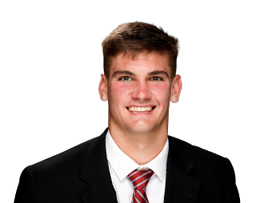

BALL KEEP
Dynasty · Redraft · Ball
Player File · QB LAR

Ty Simpson
QB · LAR · 23 · Alabama
Plus
- Rookie #8 — Alabama 2025 top plays, Superflex-only first, McVay/Rams development path.
- Quarterbacks in this class after Mendoza still matter in 2QB; Simpson is the 'he might sit and grow' version.
- Age 23 — still on the right side of the dynasty curve.
Minus
- Our own note: SF-only first. 1QB leagues should not be here.
- McVay developmental QBs can sit; 2026 production may be zero.
- Expert spread is wide (Dynasty Nerds 96, PFN (Katz/Soppe) 166…). You are betting with one camp, not a unanimous tape.
Ball Keep Take
Ty Simpson is a Superflex roster cleric. Alabama's 2025 top-plays reel is a quarterback with enough arm and structure to make the Rams spend a pick on the McVay development path. Our rookie board has him eighth and says the quiet part: Superflex-only first.
If your league starts two QBs, Simpson is a late-first/early-second hold with a chance to be a starter in 2027. If your league starts one, you should be drafting Tyson or Price instead. That is not a talent insult. That is format.
The minus is the sit. Mendoza has the same minus at a higher ceiling. Simpson is the discounted version of that minus. Pay a late first in Superflex. Pay nothing in 1QB.
Tape · college
Ty Simpson Alabama Highlights | 2025 Top Plays
Best available public clip of a 2025 college play. Not affiliated with the NFL, NCAA, or the posting channel.
Same Position on This Hub
Josh Allen · Drake Maye · Jayden Daniels · Lamar Jackson · Joe Burrow · Caleb Williams
All player pages · The Keep · Recent deals · Hot 'n' Cold · BK News